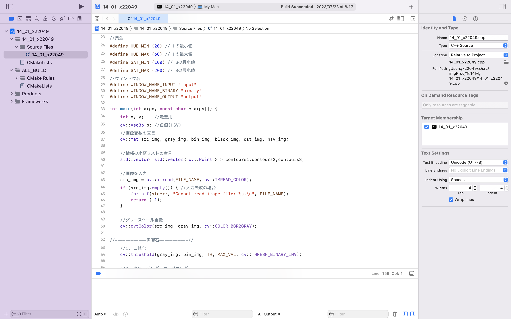

SKILL
-

MAYA
★★☆☆☆
女性の全身模型をMAYAを使って作成した
作成時間約1日
-

Premiere Pro
★★☆☆☆
mayaを使って作成した動画に音やテキストを加えて編集をした
作成時間約5時間 -
Illustrator
★★★★☆
"令和４年度食品ロス削減月間ポスターデザイン案"に投稿したイラスト
作成時間約1日
-

デッサン
★★★★☆
鉛筆,練り消しゴム,ガーゼのみでかいた蛇口のデッサン
作成時間約1日 -
C++言語
★★★☆☆
基本的なプログラムが作成可能 -
C言語
★★☆☆☆

簡単な画像処理プログラムが書ける -
Python
★★☆☆☆
カメラ映像から、Mediapipeを利用した人体認識を用いたネイル試着アプリを開発
作成期間約1週間 -
LINE チャットbot
★★☆☆☆
LINE チャットbot を開発者側として構築、作成、運用した
作成期間約1週間 -
ウェブプログラミング
★★★☆☆
自作のポートフォリオをwebサイトとしてデザイン、公開
またユーザー管理など、チームズを一部再現したサイトを作成
作成期間約1週間以上 -
CAD
★★☆☆☆
基本的な操作が可能 -
Unity
★★★☆☆
スタート画面やリザルト画面、簡単なゲームを作成できる
作成期間約1日